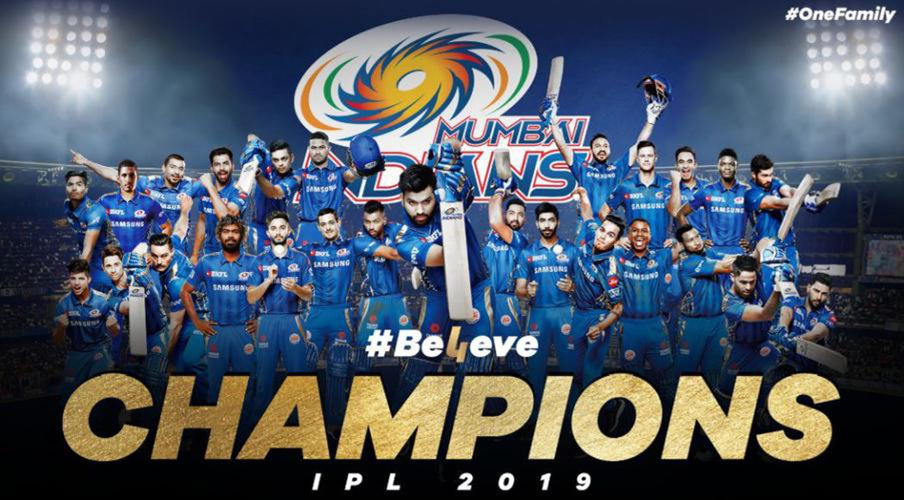

|  |
Full Name: Mumbai IndiansCaptain: Rohit SharmaCoach: Mahela JayawardeneHome Ground: Wankhede Stadium, MumbaiIPL Titles: 5Manager: Rahul Sanghvi |
|---|
Mumbai Indians (MI) is a franchise cricket team based in Mumbai, Maharashtra, India. The team was founded in 2008 and is one of the original eight teams that participated in the inaugural season of the Indian Premier League (IPL). MI is owned by India's biggest conglomerate, Reliance Industries, through its subsidiary IndiaWin Sports. MI is the most successful team in the IPL, having won the championship a record five times (in 2013, 2015, 2017, 2019, and 2020). The team is known for its strong batting lineup, which has featured some of the biggest names in cricket, including Rohit Sharma, Kieron Pollard, and Hardik Pandya. The team's home ground is the Wankhede Stadium in Mumbai, which is known for its lively atmosphere and enthusiastic crowd support. MI has a passionate fan base, often referred to as the "MI Army," and is known for its vibrant team colors of blue and gold. The team has also been involved in various charitable initiatives and community outreach programs.
NEXT